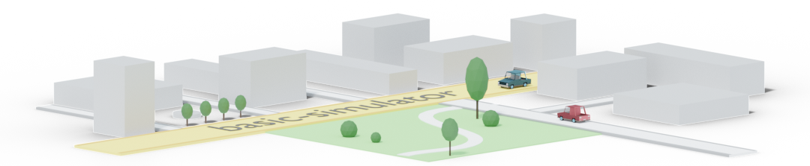
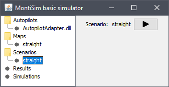

This project is a minimal setup running the MontiSim simulator in a self-contained jar.
If you know about MontiSim and Maven, the following will suffice you:
bash git clone https://git.rwth-aachen.de/monticore/EmbeddedMontiArc/simulators/basic-simulator cd basic-simulator mvn clean install -s settings.xmlThe resulting jar (install/basic-simulator.jar) can be launched normally in any folder and will create the required sub-folders and export the needed libraries to run simulations.
If not, the following documents aim at giving an introduction to project building, the basic-simulator, Maven, scripts and MontiSim.
This repository is a Maven project. You will need the Java Developpment Kit (minimum version 8), Maven and git installed.
In a folder (we recommend making a "MontiSim" folder containing all the cloned projects), clone the repository using the following in the terminal:
bash
git clone https://git.rwth-aachen.de/monticore/EmbeddedMontiArc/simulators/basic-simulator
This will create a folder named basic-simulator and download the contents of this repository inside.
To compile the Maven project, run the following command:
bash
mvn clean install -s settings.xml
This will execute the target "install" of the maven project which will compile, test and create a jar of the project.
It will then put the jar in the install directory of this project as well as in the local maven repository.
More on Maven in the Maven Project tutorial section.
NOTE: Don't forget the
-s settings.xmloption. This tells Maven where the dependencies of the MontiSim project are located (in the Nexus of the Software Engineering Chair).
The install folder contains a script to start the simulator as well as a sample map, scenario and autopilot that can be
executed.
The compiled jar file can be executed with this java command:
bash
java -jar basic-simulator.jar
This will open a window listing the available autopilots, maps, scenarios and simulation results. These are
located alongside the basic-simulator.jar file inside folders with the same names.
By selecting a scenario, you can press the "Start Simulation" button to run this scenario in the simulator.

NOTE: Currently the output of the simulation is only shown in the bash.
You can start a simulation directly without interacting with the GUI by passing a scenario name as command line argument
to the simulator:
bash
java -jar basic-simulator.jar straight
- This would start a simulation directly with the scenario "straight"
- This can be used in a script as well
By selecting a map, you can have an overview of its content.
TODO Selecting start and end positions from the map.
By selecting a result in the list, you have an overview of the map and see a dot for the simulated vehicles that move at 4x the speed of the simulation.
TODO navigate the timeline, set playback speed, start/pause/stop playback.
TODO Add data visualization tabs for frame based data.
The Basic Simulator uses JSON scenarios. This is for easier prototyping and parsing of the scenarios. The scenario straight is a good example of how to configure a scenario. For the complete configuration entries currently supported, look at the entries in the BasicController.ScenarioSettings Enum. The configuration specific to vehicles can be seen in VehicleBuilder.VehicleSettings.
Compiling might not work in IntelliJ natively because of the complex dependency setup of the simulator. Because of this compile the project using the Maven command (mvn clean install ...), the easiest is to have it in a script.
To avoid running all the tests when compiling for a small change (always run the tests before commiting/pushing), add the -DskipTests argument to the
maven command. (mvn clean install -s settings.xml -DskipTests)
This setup of the MontiSim simulator is local and self-contained. This allows you to run the java debugger on the jar.
For this create a Run/Debug configuration that executes the jar and specify a folder in which to run it. (Ex: the install folder inside the basic-simulator project). You can then start the simulator in normal or debug mode, set breakpoints and step through almost the entire code.
(NOTE: To step through the Hardware Emulator you need to attach a C++ debugger to the Java simulator process and set breakpoints in the HardwareEmulator library.)
Using Git is central to working with EmbeddedMontiArc projects since they are all hosted on the GitLab instance of RWTH. For a graphical user interface you can use GitHub Desktop and link the different repositories in its interface. This allows to stage, commit, push, pull and merge from the GUI. For installing GitHub Desktop under linux, check out this repository.
The following is a recap of the git process and a list of usefull git commands.
The .gitignore file contains folder and file names or patterns (using the wildcard *) of files that will not be included in any way in the reporitory: the files will not be listed in the unstaged changes. To explicitely include a file use the negative pattern !name_to_include.
Git works by having remote and local repositories. The remote repositories are hosted on the GitLab and are common to everybody. The local repositories are an instance of a remote repository somewhere in a folder on your computer (e.g. created through git clone <link.git>).
Every repository can have multiple branches: different versions of the repository content. To create a branch locally use git checkout <branchName>. If the branch exists in the remote repository, it will update the local files to the state of the remote repository. The changes made to the local repository will be attributed to the current branch.
Changes to files in the local repository are at first in an unstaged state. By staging them (git add ...), they will be part of the next commit. When a commit is created with git commit -m "Commit Description", only the staged changes will be included in it.
Commits are only in the local repository at first. The state between the local and the remote repository is handled with the git pull and git push commands. Pulling is downloading the lastest changes from the remote repository. Pushing is sending the local commits to the remote repository.
| Command | Description |
|---|---|
git status |
Shows the state of the local repository (changes, commits, ...) |
git clone <repo> |
Creates a folder and copies the remote repository to it. |
git checkout branch |
If the local branch exists: update the files to the state of the branch. If not, creates a local branch. |
git add . |
Stages all the local changes (except for files and folders in the .gitignore) |
git stash |
Resets the unstaged changes but stores them in a stash. |
git commit -m "commit description" |
Creates a commit with all the staged changes. |
git push |
Sends all the local commits to the remote repository. |
git branch |
Shows the active branch |
git pull |
Downloads the last changes of the remote repository to the local one. Tries to merge the changes with the local changes. Can create Merge Conflicts. |
git merge <branch> |
Pulls the content of the specified branch into the active branch. |
The Master branch of the projects represent their current latest stand. To put the changes from a branch into the master, a Merge Request has to be created on the branch webpage. For a branch to be merged into the master, following criteria must be met: - The branch contains the latest commit of the master. - All merge conflicts with the master branch are resolved. - For Maven projects, the project version number must be incremented from the current master state.
A maven project contains Java source code, tests, resources and a description file, the pom.xml file.
The project folder contains the pom.xml file. The maven commands must be run in the folder containing this file. Alongside this file is the src folder, containing all the code and resources. The src folder contains two sub-folders: main and test. These specify if the contents are for the final jar or if they are the sources and resources of the JUnit tests.
The main and test folders then in turn contain a java folder with all the .java files. The folder structure for the sources should match the java package structure even if maven does not care and will read any java source file as-is from this sub-folder.
Alongside the java folder can be a resource folder with files that will be packaged into the jar for the main target or be available to the test target.
The target folder is created by maven when building the project and contains all the temporary files. It can be deleted at any time and should not appear in the remote repository.
There can be any other folder alongside those mentionned here in the project folder. (Example: docs folder with documentation, graphics, ..., a scripts folder with various scripts, ...)
The pom.xml file is what describes the details of the project to maven.
The following entries describe the group, id, version and name of the project:
xml
<groupId>de.rwth-aachen.se.montisim.simulators</groupId>
<artifactId>basic-simulator</artifactId>
<version>1.1</version>
<name>basic-simulator</name>
The <properties> entry allows to define variables. Example:
xml
<properties>
<montisim.commons.version>1.0.9</montisim.commons.version>
<java.version>1.8</java.version>
</properties>
Where the <montisim.commons.version>1.0.9</montisim.commons.version> entry can be used as follow in the rest of the pom: ${montisim.commons.version}. Generally the properties entries look as follow: <var_name>VALUE</var_name> and can be used as: ${var_name} and will resolve to VALUE.
The <dependencies> entry contains a list of project dependencies that will be used in the project. An example entry would be:
xml
<dependencies>
...
<dependency>
<groupId>montisim</groupId>
<artifactId>commons</artifactId>
<version>${montisim.commons.version}</version>
</dependency>
...
</dependencies>
More on the dependency system in the next section.
The pom.xml file also contains a list of plugins for the build process. This is the way of configuring the steps of the build process in maven. They are executed when running the mvn install ... command.
The plugin handling java compilation is maven-compiler-plugin, the plugin handling the testing is maven-surefire-plugin. The maven-shade-plugin plugin handles the creation of the fat-jar (jar containing all the dependencies that can be executed as standalone).
The license-maven-plugin plugin will check that the content of a specified license file is at the top of all the files of the project. When adding new files to the project, it is good to run maven once before commiting to include the license headers in the new files.
The <plugin> entries are used to specify which version of those plugins to use and to set their settings.
Finally the settings.xml file contains information about the remote maven repositories containing all the dependencies of MontiSim.
A dependency in the pom.xml describes a needed artifact for the project. When building, maven will do the following:
1. Look inside the local maven repository (%HOME_DIR%\.m2\repository) for the artifact with the given version.
2. If not found, look-up the different remote maven repositories for the artifact and download it to the local repository. The settings.xml file includes the nexus repository of the SE-chair, which contains the artifacts of all the master branches of the projects of the SE-GitLab (MontiSim, MontiCore, ...).
When running the install target of maven (mvn clean install ...), if the compilation and tests succeed, the resulting artifact will be placed in the local repository (overriding any artifact with the same id and version).
This means that to make local changes to a dependency of a project, the project of the dependency can be compiled locally and will be available to the other project through the local maven repository.
Comming Soon
- Maven dependency system: nexus, local repository and versioning
- Nexus: from the SE chair, contains all the versions from the master branch. Linked to in settings.xml.
- Local repository: (.m2/repository in your user folder) contains the dependencies from the nexus + the projects compiled using the "install" target: you can override versions/...
- Versioning: use next version with -SNAPSHOT when developing in a branch. Refer to this version locally. The commit that will be merged to master must NOT contain the -SNAPSHOT.
- Maven plug-ins: build targets and plug-ins
- Gitlab CI and other Repository plug-ins
- CI stages, runners
git config credential.helper store
Comming Soon
- Recommendation: create scripts to automate processes that take more than one short step.
- Cheatsheet: most usefull commands under linux and windows.
Use cases: building, inter-project copy, testing.
chmod +x filename.sh
- msbuild -verbosity:quiet build\hardware-emulator.sln /m /p:Configuration=Release /p:Platform=x64
- sudo apt-get install -y default-jdk
- sudo apt-get install -y openjdk-8-jdk
Comming Soon
- Project Structure
- Simulation project
- Vehicle
- Maps
- Simulator
- Autopilots
- RMIModelServer
- Basic Simulator
- Distributed System
- RPC
- Restful
[ ] Sub-task 3
[x] Completed task
#F00
#F00A
#FF0000
#FF0000AA
RGB(0,255,0)
RGB(0%,100%,0%)
RGBA(0,255,0,0.3)
HSL(540,70%,50%)
HSLA(540,70%,50%,0.3)
mermaid
graph TD;
A-->B;
A-->C;
B-->D;
C-->D;
math
a^2+b^2=c^2
- {+ addition 1 +}
- [+ addition 2 +]
- {- deletion 3 -}
- [- deletion 4 -]
Sometimes you want to :monkey: around a bit and add some :star2: to your :speech_balloon:. Well we have a gift for you:
:zap: You can use emoji anywhere GFM is supported. :v:
You can use it to point out a :bug: or warn about :speak_no_evil: patches. And if someone improves your really :snail: code, send them some :birthday:. People will :heart: you for that.
If you are new to this, don't be :fearful:. You can easily join the emoji :family:. All you need to do is to look up one of the supported codes.
Consult the Emoji Cheat Sheet for a list of all supported emoji codes. :thumbsup:
The formula for water is H2O while the equation for the theory of relativity is E = mc2.